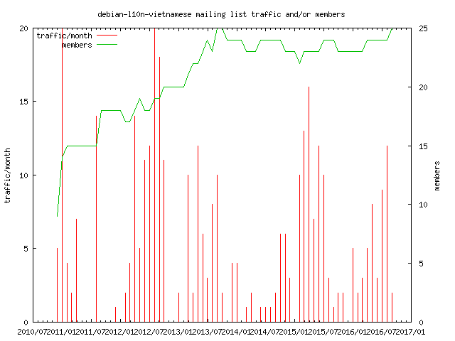
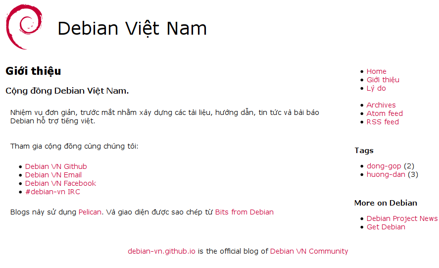

Dự án Debian
Ngưởi kể: Giáp Trần
Xem trực tuyến : Tiếng Anh hoặc Tiếng Việt
Và trên GitHub/Debian-VN
Chương trình
- Debian là gì ?
- “Khế ước Xã hội”
- Tại sao là Debian ?
- Các con số
- Làm sao có thể hỗ trợ Debian ?
- Cộng đồng Debian tại Việt Nam
Tôi là ai ?


- Sinh viên năm cuối Bách Khoa
Truyền thông và Mạng máy tính
- Sysadmin tại Linagora VietNam
- Tình nguyện viên Debian
1. Debian là gì?
2. Kế ước Xã hội
3. Why Debian?
4. Các con só
Sử dụng máy chủ cho trang Web

DistroWatch Page Hit Ranking

5. Làm sao có thể hỗ trợ Debian?
Đóng góp các bản dịch tài liệu, báo và các gói
debian-l10n-vietnamese@lists.debian.org6. Cộng đồng Debian tại Việt Nam
Lưu lượng trên bó thư

debian-vn.github.io
github.com/debian-vn

commit & comment

Upstream